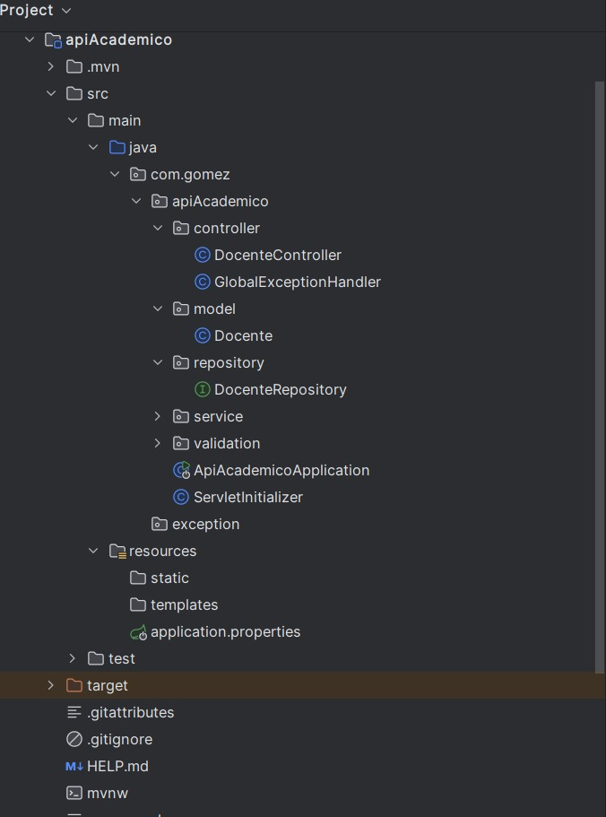
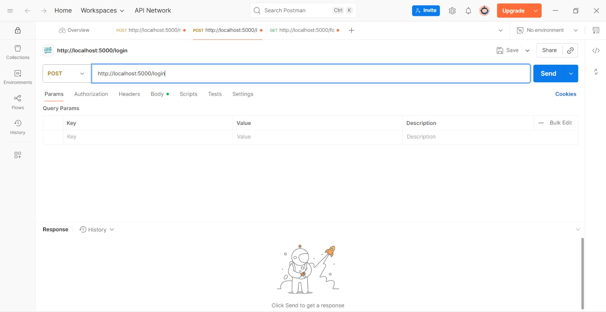
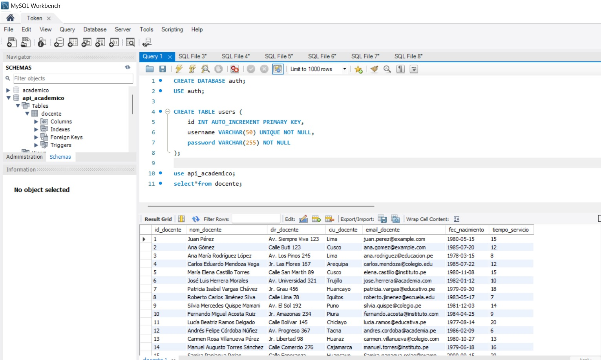

API RESTful con Jakarta EE y Spring
Proyecto: Sistema de Gestión de Docentes
Esta semana desarrollé una API RESTful completa para la gestión de docentes utilizando Jakarta EE y Spring Framework. La aplicación permite realizar operaciones CRUD avanzadas sobre una entidad Docente, conectada a una base de datos MySQL.
🎯 Objetivo Principal
Crear una API robusta que permita gestionar información de docentes con operaciones CRUD completas, validaciones, paginación y funcionalidades avanzadas de consulta.
🛠️ Stack Tecnológico
- Jakarta EE 24 - Framework empresarial
- Spring Framework - Inyección de dependencias
- Spring Data JPA - Persistencia de datos
- MySQL - Base de datos relacional
- Swagger - Documentación de API
- Postman - Testing de endpoints
Entidad Docente - Modelo de Datos
La entidad principal del sistema contiene la siguiente estructura de información:
📋 Campos de la Entidad Docente:
🆔 idDocente
Identificador único del docente (Primary Key, Auto-increment)
👤 nomDocente
Nombre completo del docente (String, requerido)
🏠 dirDocente
Dirección de residencia del docente (String)
🏙️ ciuDocente
Ciudad de residencia del docente (String, requerido)
📧 emailDocente
Correo electrónico del docente (String, formato email válido)
📅 fecNacimiento
Fecha de nacimiento del docente (Date, debe ser anterior a hoy)
⏱️ tiempoServicio
Años de servicio del docente (Integer, no puede ser negativo)
Implementación de la Entidad:
@Entity
@Table(name = "docentes")
public class Docente {
@Id
@GeneratedValue(strategy = GenerationType.IDENTITY)
private Long idDocente;
@NotBlank(message = "El nombre del docente es requerido")
@Column(nullable = false)
private String nomDocente;
private String dirDocente;
@NotBlank(message = "La ciudad es requerida")
@Column(nullable = false)
private String ciuDocente;
@Email(message = "El formato del email no es válido")
@NotBlank(message = "El email es requerido")
@Column(unique = true)
private String emailDocente;
@Past(message = "La fecha de nacimiento debe ser anterior a hoy")
@NotNull(message = "La fecha de nacimiento es requerida")
private LocalDate fecNacimiento;
@Min(value = 0, message = "El tiempo de servicio no puede ser negativo")
@NotNull(message = "El tiempo de servicio es requerido")
private Integer tiempoServicio;
// Constructores, getters y setters
}
Operaciones CRUD Implementadas
La API implementa todas las operaciones básicas y avanzadas para la gestión de docentes:
🔍 Operaciones de Consulta (READ)
GET /api/docentes
Descripción: Lista todos los docentes con soporte para paginación
Parámetros: ?page=0&size=10 (opcional)
Respuesta: Lista paginada de docentes
GET /api/docentes/{id}
Descripción: Obtiene un docente específico por su ID
Parámetros: id (Long) - ID del docente
Respuesta: Datos completos del docente
GET /api/docentes/ciudad/{ciudad}
Descripción: Lista docentes que residen en una ciudad específica
Ejemplo: /api/docentes/ciudad/Cusco
Puntos: 2 puntos
GET /api/docentes/experiencia/{años}
Descripción: Lista docentes con al menos cierta cantidad de años de servicio
Ejemplo: /api/docentes/experiencia/10
Puntos: 2 puntos
GET /api/docentes/edad-promedio
Descripción: Calcula y devuelve la edad promedio de todos los docentes
Respuesta: Número decimal con la edad promedio
Puntos: 2 puntos
✏️ Operaciones de Modificación
POST /api/docentes
Descripción: Crea un nuevo docente
Body: JSON con datos del docente
Validaciones: Email válido, fecha anterior a hoy, tiempo servicio ≥ 0
PUT /api/docentes/{id}
Descripción: Actualiza los datos completos de un docente
Body: JSON con datos actualizados
DELETE /api/docentes/{id}
Descripción: Elimina un docente por su ID
Respuesta: Confirmación de eliminación
Implementación del Controlador REST
El controlador principal maneja todas las operaciones de la API:
@RestController
@RequestMapping("/api/docentes")
@CrossOrigin(origins = "*")
@Api(tags = "Gestión de Docentes")
public class DocenteController {
@Autowired
private DocenteService docenteService;
@GetMapping
@ApiOperation("Listar todos los docentes con paginación")
public ResponseEntity<Page<Docente>> getAllDocentes(
@RequestParam(defaultValue = "0") int page,
@RequestParam(defaultValue = "10") int size) {
Pageable pageable = PageRequest.of(page, size);
Page<Docente> docentes = docenteService.findAll(pageable);
return ResponseEntity.ok(docentes);
}
@GetMapping("/{id}")
@ApiOperation("Obtener docente por ID")
public ResponseEntity<Docente> getDocenteById(@PathVariable Long id) {
Optional<Docente> docente = docenteService.findById(id);
return docente.map(ResponseEntity::ok)
.orElse(ResponseEntity.notFound().build());
}
@PostMapping
@ApiOperation("Crear nuevo docente")
public ResponseEntity<Docente> createDocente(
@Valid @RequestBody Docente docente) {
Docente savedDocente = docenteService.save(docente);
return ResponseEntity.status(HttpStatus.CREATED).body(savedDocente);
}
@GetMapping("/ciudad/{ciudad}")
@ApiOperation("Listar docentes por ciudad")
public ResponseEntity<List<Docente>> getDocentesByCiudad(
@PathVariable String ciudad) {
List<Docente> docentes = docenteService.findByCiudad(ciudad);
return ResponseEntity.ok(docentes);
}
@GetMapping("/experiencia/{años}")
@ApiOperation("Listar docentes con experiencia mínima")
public ResponseEntity<List<Docente>> getDocentesByExperiencia(
@PathVariable Integer años) {
List<Docente> docentes = docenteService.findByTiempoServicioGreaterThanEqual(años);
return ResponseEntity.ok(docentes);
}
@GetMapping("/edad-promedio")
@ApiOperation("Calcular edad promedio de docentes")
public ResponseEntity<Double> getEdadPromedio() {
Double edadPromedio = docenteService.calculateAverageAge();
return ResponseEntity.ok(edadPromedio);
}
}
Validaciones Implementadas
El sistema incluye validaciones robustas para garantizar la integridad de los datos:
📧 Validación de Email (2 puntos)
Regla: El emailDocente debe tener formato de correo válido
Implementación: @Email annotation + regex validation
@Email(message = "El formato del email no es válido")
@NotBlank(message = "El email es requerido")
@Column(unique = true)
private String emailDocente;
⏱️ Validación de Tiempo de Servicio (2 puntos)
Regla: El tiempoServicio no puede ser negativo
Implementación: @Min(0) annotation
@Min(value = 0, message = "El tiempo de servicio no puede ser negativo")
@NotNull(message = "El tiempo de servicio es requerido")
private Integer tiempoServicio;
📅 Validación de Fecha de Nacimiento (2 puntos)
Regla: La fecNacimiento debe ser anterior a la fecha actual
Implementación: @Past annotation
@Past(message = "La fecha de nacimiento debe ser anterior a hoy")
@NotNull(message = "La fecha de nacimiento es requerida")
private LocalDate fecNacimiento;
Funcionalidades Avanzadas
📖 Documentación Swagger (2 puntos)
Implementación completa de documentación automática de la API usando Swagger/OpenAPI:
@Configuration
@EnableSwagger2
public class SwaggerConfig {
@Bean
public Docket api() {
return new Docket(DocumentationType.SWAGGER_2)
.select()
.apis(RequestHandlerSelectors.basePackage("com.docentes.controller"))
.paths(PathSelectors.any())
.build()
.apiInfo(apiInfo());
}
private ApiInfo apiInfo() {
return new ApiInfoBuilder()
.title("API de Gestión de Docentes")
.description("API RESTful para gestionar información de docentes")
.version("1.0.0")
.build();
}
}
🚨 Manejo de Excepciones Globales (2 puntos)
Sistema centralizado de manejo de errores con respuestas consistentes:
@ControllerAdvice
public class GlobalExceptionHandler {
@ExceptionHandler(MethodArgumentNotValidException.class)
public ResponseEntity<ErrorResponse> handleValidationExceptions(
MethodArgumentNotValidException ex) {
Map<String, String> errors = new HashMap<>();
ex.getBindingResult().getAllErrors().forEach((error) -> {
String fieldName = ((FieldError) error).getField();
String errorMessage = error.getDefaultMessage();
errors.put(fieldName, errorMessage);
});
ErrorResponse errorResponse = new ErrorResponse(
"Errores de validación", errors);
return ResponseEntity.badRequest().body(errorResponse);
}
}
📄 Paginación Avanzada (8 puntos)
Sistema completo de paginación para el listado de docentes:
@GetMapping
public ResponseEntity<Page<Docente>> getAllDocentes(
@RequestParam(defaultValue = "0") int page,
@RequestParam(defaultValue = "10") int size,
@RequestParam(defaultValue = "idDocente") String sortBy,
@RequestParam(defaultValue = "asc") String sortDir) {
Sort sort = sortDir.equalsIgnoreCase("desc") ?
Sort.by(sortBy).descending() :
Sort.by(sortBy).ascending();
Pageable pageable = PageRequest.of(page, size, sort);
Page<Docente> docentes = docenteService.findAll(pageable);
return ResponseEntity.ok(docentes);
}
Ejemplo de uso: GET /api/docentes?page=0&size=10&sortBy=nomDocente&sortDir=asc
Testing con Postman
Demostración completa de todos los endpoints usando Postman:
🧪 Casos de Prueba Implementados
1. Crear Docente (POST)
POST /api/docentes
Content-Type: application/json
{
"nomDocente": "Dr. Juan Pérez García",
"dirDocente": "Av. El Sol 123, San Blas",
"ciuDocente": "Cusco",
"emailDocente": "juan.perez@universidad.edu.pe",
"fecNacimiento": "1980-05-15",
"tiempoServicio": 12
}
2. Listar con Paginación (GET)
GET /api/docentes?page=0&size=5&sortBy=nomDocente&sortDir=asc
Respuesta esperada:
{
"content": [...],
"pageable": {
"pageNumber": 0,
"pageSize": 5
},
"totalElements": 25,
"totalPages": 5
}
3. Buscar por Ciudad (GET)
GET /api/docentes/ciudad/Cusco
Retorna todos los docentes que residen en Cusco
4. Filtrar por Experiencia (GET)
GET /api/docentes/experiencia/10
Retorna docentes con 10 o más años de servicio
5. Edad Promedio (GET)
GET /api/docentes/edad-promedio
Respuesta: 42.5
Tecnologías y Herramientas Utilizadas
Backend Framework:
- Jakarta EE 24 - Plataforma empresarial
- Spring Framework 6.x - Inyección de dependencias
- Spring Boot 3.x - Configuración automática
- Spring Data JPA - Persistencia de datos
- Spring Web MVC - API REST
Base de Datos:
- MySQL 8.0 - Base de datos relacional
- Hibernate - ORM (Object-Relational Mapping)
- JPA - Java Persistence API
Validación y Documentación:
- Bean Validation (JSR-303) - Validaciones
- Swagger/OpenAPI 3 - Documentación API
- SpringDoc - Integración Swagger con Spring
Testing y Herramientas:
- Postman - Testing de API
- Maven - Gestión de dependencias
- IntelliJ IDEA - IDE de desarrollo
- MySQL Workbench - Administración BD
Ejemplos Prácticos y Capturas
A continuación se muestran capturas del desarrollo y funcionamiento de la API RESTful con Jakarta EE y Spring:
📸 Captura 1: Estructura del proyecto Jakarta EE
Organización del proyecto mostrando la arquitectura Jakarta EE con controladores, servicios y entidades
📸 Captura 2: API REST endpoints funcionando
Pruebas de los endpoints de la API RESTful mostrando operaciones CRUD con respuestas JSON
📸 Captura 3: Integración Spring y base de datos
Configuración de Spring Data JPA y conexión exitosa con la base de datos mostrando persistencia de datos
Código Fuente y Recursos
Ver Código Fuente Completo
Accede al repositorio completo con la API RESTful desarrollada con Jakarta EE y Spring de la Semana 12.
📁 Contenido del Repositorio
-
API RESTful Completa
Implementación completa de servicios web REST con CRUD
-
Proyecto Jakarta EE
Aplicación empresarial con Jakarta EE y sus especificaciones
-
Integración Spring
Configuración y uso de Spring Framework con la API
-
Persistencia de Datos
Manejo de bases de datos y operaciones CRUD
-
Documentación API
Documentación completa de endpoints y ejemplos de uso
Reflexión Personal
Esta semana representó un desafío técnico significativo que me permitió consolidar mis conocimientos en desarrollo de APIs empresariales. La combinación de Jakarta EE y Spring Framework me mostró el poder y la robustez de las tecnologías Java para aplicaciones de nivel empresarial.
La implementación de validaciones complejas me enseñó la importancia de la integridad de datos desde el nivel de aplicación. Usar anotaciones como @Email, @Past, y @Min no solo simplifica el código, sino que garantiza consistencia en toda la aplicación.
El desarrollo de endpoints especializados como la búsqueda por ciudad, filtrado por experiencia y cálculo de edad promedio me ayudó a entender cómo diseñar APIs que realmente resuelvan necesidades de negocio específicas, no solo operaciones CRUD básicas.
La implementación de paginación avanzada fue particularmente educativa. Entender cómo manejar grandes volúmenes de datos de manera eficiente es crucial para aplicaciones del mundo real. La integración con Spring Data JPA hizo que esta funcionalidad compleja fuera sorprendentemente elegante.
El manejo global de excepciones me mostró la importancia de tener respuestas de error consistentes y útiles. Un buen sistema de manejo de errores es tan importante como la funcionalidad principal de la API.
La documentación automática con Swagger cambió mi perspectiva sobre la documentación de APIs. No es solo una herramienta para otros desarrolladores, sino una forma de validar y mejorar el diseño de la propia API durante el desarrollo.
Finalmente, las pruebas exhaustivas con Postman me enseñaron la importancia de testing sistemático. Cada endpoint, cada validación, cada caso edge debe ser probado meticulosamente para garantizar la calidad del software.
Esta experiencia me preparó para enfrentar proyectos de desarrollo backend de nivel empresarial con confianza y mejores prácticas.